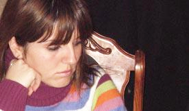

ИСТОРИЯ ОДНОЙ ДЕРЕВНИ
Ани Мартиросян
студентка факультета
журналистики РАУ
Мастер-класс
Алекпера Алиева
студентка факультета
журналистики РАУ
Мастер-класс
Алекпера Алиева
Весна 1994 года особенно запечатлелась в моей памяти, так как с ней связаны самые яркие воспоминания моего детства. Я не забуду первых впечатлений, связанных с приездом в деревню. Был месяц май, небо было безоблачным, и лучи весеннего солнца согревали не только природу, но и мою душу. Яблоневые сады расцвели и нежный аромат цветов распространился по всему воздуху. Я боялась пройти по тропинке, чтобы случайно не наступить на разноцветный ковер цветов. Одним словом, я никогда, нигде не видела такой красоты. Между тем дни проходили за днями ...
Вдруг солнечная погода превратилась в дождливую. Казалось, что дождь никогда не закончится. Мне было очень скучно, и я подошла к бабушке с вопросом: «Бабуль, почему здесь все время дожди?» Бабуля взглянула на меня с болью и грустью и ответила: «Это природа плачет по прежним жителям деревни ...» . И тогда я узнала, что в маленькой, всеми забытой деревне Кызыл-Шафаг, находящейся в Таширском районе, во времена Советского Союза жили азербайджанцы.
В 1988 году деревня преобразилась. Жители покинули ее, и сюда переселились армяне из Баку, Шемаха, Керкенча. Кызыл-Шафаг переименовали в Дзюнашах. Все, что я услышала в этот день очень заинтересовало меня. Но существовала еще одна нераскрытая тайна. Я часами простаивала у ворот дома, мое внимание притягивала соседняя деревня с бесконечным количеством домов. Границей между деревнями были зеленные поля. Я смотрела вдаль, и мне было так интересно узнать, кто живет там, чем они занимаются ...
Все прояснилось в сезон сенокоса, когда зашла домой и услышала непонятную речь. Я поздоровалась и услышала ответ на моем родном языке. Это меня очень удивило. Села и стала внимательно наблюдать. Разговор возобновился. А через некоторое время гость ушел, договорившись с дедушкой о чем-то. (Позже узнала они обсуждали проблемы, с сенокосом. И очень часто случалось так, что соседи выручали друг друга.) После ухода гостя на бабушку обрушился поток моих вопросов...
«Дзюнашах – символ дружбы двух враждующих народов», - сказала она тогда.
22-02-07
Вдруг солнечная погода превратилась в дождливую. Казалось, что дождь никогда не закончится. Мне было очень скучно, и я подошла к бабушке с вопросом: «Бабуль, почему здесь все время дожди?» Бабуля взглянула на меня с болью и грустью и ответила: «Это природа плачет по прежним жителям деревни ...» . И тогда я узнала, что в маленькой, всеми забытой деревне Кызыл-Шафаг, находящейся в Таширском районе, во времена Советского Союза жили азербайджанцы.
В 1988 году деревня преобразилась. Жители покинули ее, и сюда переселились армяне из Баку, Шемаха, Керкенча. Кызыл-Шафаг переименовали в Дзюнашах. Все, что я услышала в этот день очень заинтересовало меня. Но существовала еще одна нераскрытая тайна. Я часами простаивала у ворот дома, мое внимание притягивала соседняя деревня с бесконечным количеством домов. Границей между деревнями были зеленные поля. Я смотрела вдаль, и мне было так интересно узнать, кто живет там, чем они занимаются ...
Все прояснилось в сезон сенокоса, когда зашла домой и услышала непонятную речь. Я поздоровалась и услышала ответ на моем родном языке. Это меня очень удивило. Села и стала внимательно наблюдать. Разговор возобновился. А через некоторое время гость ушел, договорившись с дедушкой о чем-то. (Позже узнала они обсуждали проблемы, с сенокосом. И очень часто случалось так, что соседи выручали друг друга.) После ухода гостя на бабушку обрушился поток моих вопросов...
«Дзюнашах – символ дружбы двух враждующих народов», - сказала она тогда.
22-02-07